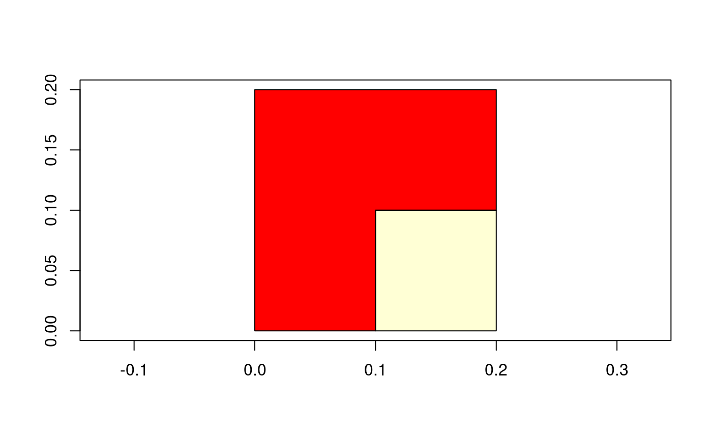

topo-bin-gUnion.RdFunctions for joining intersecting geometries.
gUnion(spgeom1, spgeom2, byid=FALSE, id=NULL, drop_lower_td=FALSE, unaryUnion_if_byid_false=TRUE, checkValidity=NULL) gUnionCascaded(spgeom, id = NULL) gUnaryUnion(spgeom, id = NULL, checkValidity=NULL) gLineMerge(spgeom, byid=FALSE, id = NULL)
| spgeom1, spgeom2 | sp objects as defined in package sp |
|---|---|
| byid | Logical vector determining if the function should be applied across ids (TRUE) or the entire object (FALSE) for spgeom1 and spgeom2 |
| id | Character vector defining id labels for the resulting geometries, if unspecified returned geometries will be labeled based on their parent geometries' labels; it may contain NA values for input objects not included in the union; it should define the memberships of the output Polygons objects |
| drop_lower_td | default FALSE; if TRUE, objects will be dropped from output GEOMETRYCOLLECTION objects to simplify output if their topological dinension is less than the minimum topological dinension of the input objects. |
| spgeom | sp Polygon(s) or Line(s) depending on the function used |
| unaryUnion_if_byid_false | default TRUE; if |
| checkValidity | default NULL, integer 0L (no action), 1L (check), 2L (check and try to buffer by zero distance to repair). If NULL, a value set to 0L for GEOS < 3.7.2, 1L for GEOS >= 3.7.2 is read from values assigned on load. Error meesages from GEOS do not say clearly which object fails if a topology exception is encountered. If this argument is > 0L, |
Returns an sp object with intersecting geometries merged. If geometries do not intersect then both are returned as distinct subgeometries.
gUnionCascaded expects a single sp object of class SpatialPolygons with subgeometries which it unions together. gUnionCascaded can only dissolve MultiPolygon objects, so GeometryCollection objects to be dissolved, here a SpatialPolygons object, must be flattened a Polygons object; if GEOS version 3.3.0 is available, use gUnaryUnion.
gUnaryUnion expects a single sp object of class SpatialPolygons with subgeometries which it unions together; introduced in GEOS version 3.3.0, and handles GeometryCollection objects. If the id argument is used, it should be a character vector defining the memberships of the output Polygons objects, equal in length to the length of the polygons slot of spgeom.
gLineMerge is similar to gUnionCascaded but is written to work with lines, specifically it joins line segments with intersecting end points.
Error messages from GEOS, in particular topology exceptions, report 0-based object order, so geom 0 is spgeom1, and geom 1 is spgeom2.
Roger Bivand & Colin Rundel
if (require(maptools)) { nc1 <- readShapePoly(system.file("shapes/sids.shp", package="maptools")[1], proj4string=CRS("+proj=longlat +datum=NAD27")) lps <- coordinates(nc1) ID <- cut(lps[,1], quantile(lps[,1]), include.lowest=TRUE) if (version_GEOS0() < "3.3.0") { reg4 <- gUnionCascaded(nc1, ID) } else { reg4 <- gUnaryUnion(nc1, ID) } row.names(reg4) par(mfrow=c(2,1)) plot(nc1) plot(reg4) par(mfrow=c(1,1)) }#> Warning: readShapePoly is deprecated; use rgdal::readOGR or sf::st_readgt <- GridTopology(c(0.05,0.05), c(0.1,0.1), c(2,2)) set.seed(1) xv <- rnorm(length(coordinates(gt)[,1])) xvs <- ifelse(xv > 0.2,1,0) grd <- SpatialGridDataFrame(gt, data.frame(xvs)) spix <- as(grd, "SpatialPixelsDataFrame") spol <- as(spix, "SpatialPolygonsDataFrame") image(grd, axes=TRUE)if (version_GEOS0() < "3.3.0") { spol1 <- gUnionCascaded(spol, as.character(spol$xvs)) } else { spol1 <- gUnaryUnion(spol, as.character(spol$xvs)) } plot(spol1, add=TRUE)